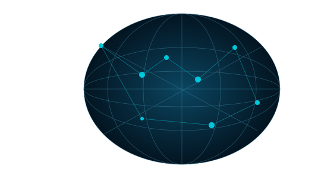

Liquidity X-Ray Engine
Scan. Analyze. Simulate. Understand.

SAVED OBSERVATIONS
Pool intelligence
Loading observations…
| # | Token pair | Chain | Venue | Quote reserve | Spot gap | Evidence | Action |
|---|
Spot gap excludes fees, size and gas. Net profit is unknown. All routes remain unqualified.
Built by WADJ Studio